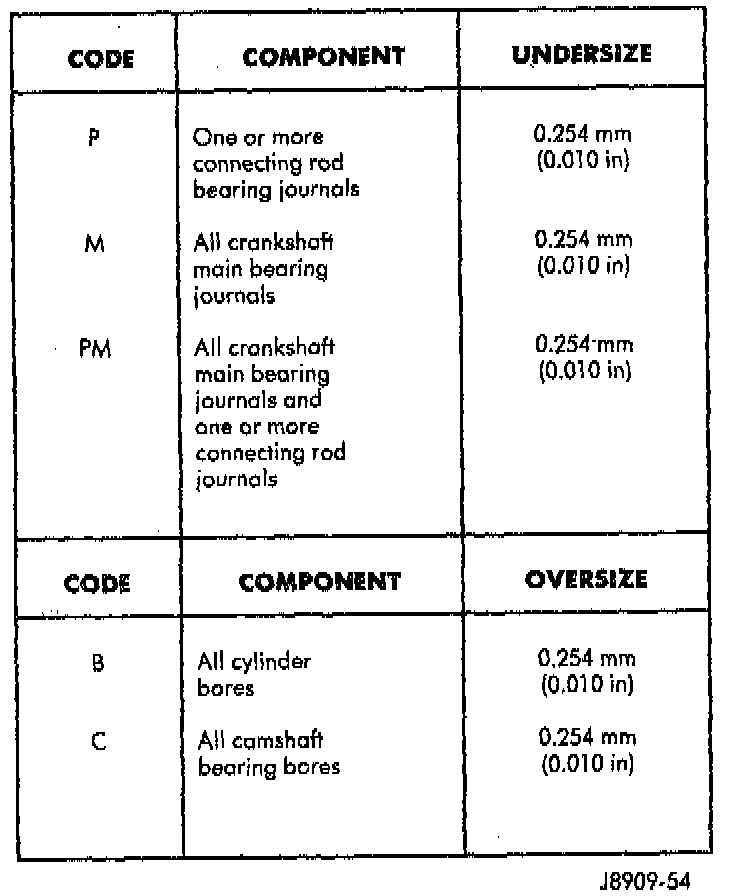
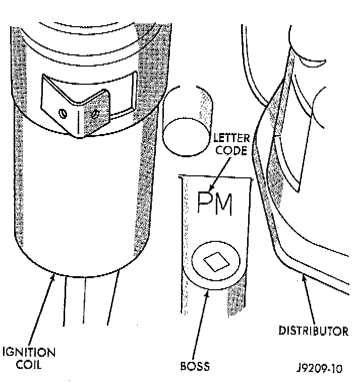

Cylinder Block Assembly: Application and ID
NOTE: Some engines may be built with oversize or undersize components such as:^ Oversize cylinder bores.
^ Oversize camshaft bearing bores.
^ Undersize crankshaft main bearing journals.
^ Undersize connecting rod journals.


These engines are identified by a letter code stamped on a boss between the ignition coil and the distributor.